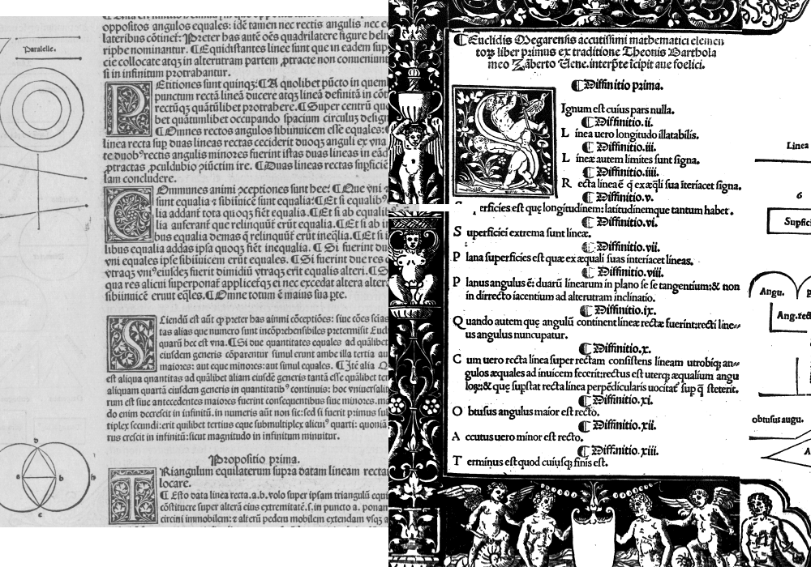
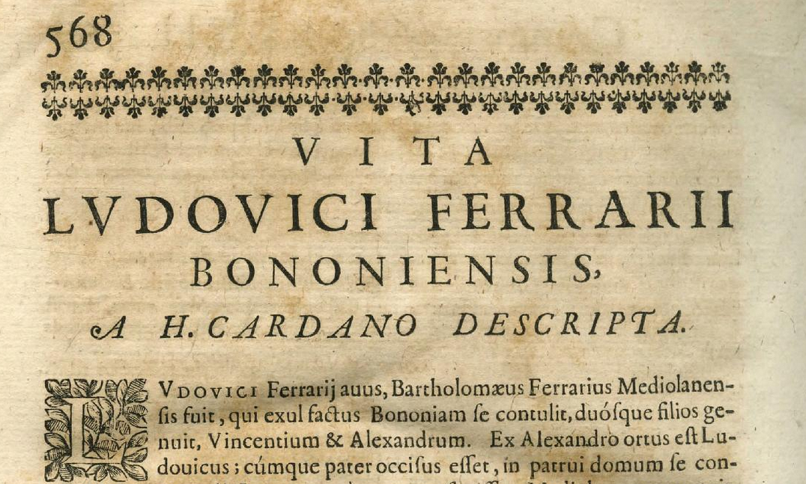
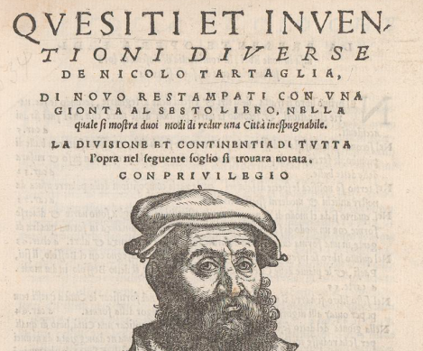

Euclid, Book I
First 11 propositions

Ferrari
Italian text · English translation · PDF · Images

Tartaglia
PDF · Images


Materials related to the presentation at the 10th European Summer University on the History and Epistemology in Mathematics Education

First 11 propositions

Italian text · English translation · PDF · Images

PDF · Images